Kids photograph their worksheet (or their room) with any phone. A crew of AI agents on Amazon Bedrock marks the work on the TV, with a hint for every mistake and never the answer, builds a practice round on exactly what slipped, and turns the week's learning into a co-op family quiz that lights up the Family Stone.
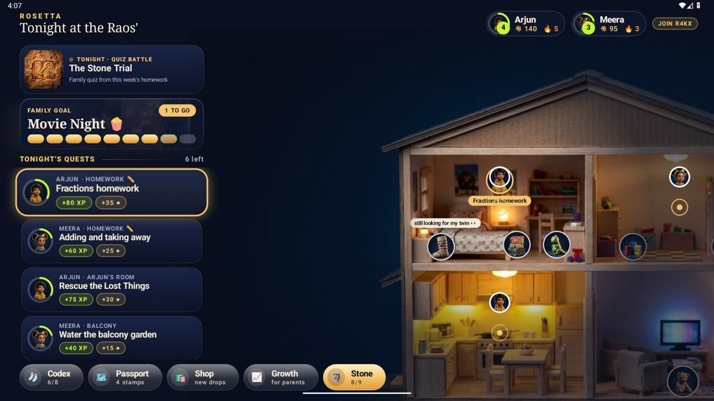
Like the Rosetta Stone let two languages understand each other, the app turns what parents say into something kids want to do.
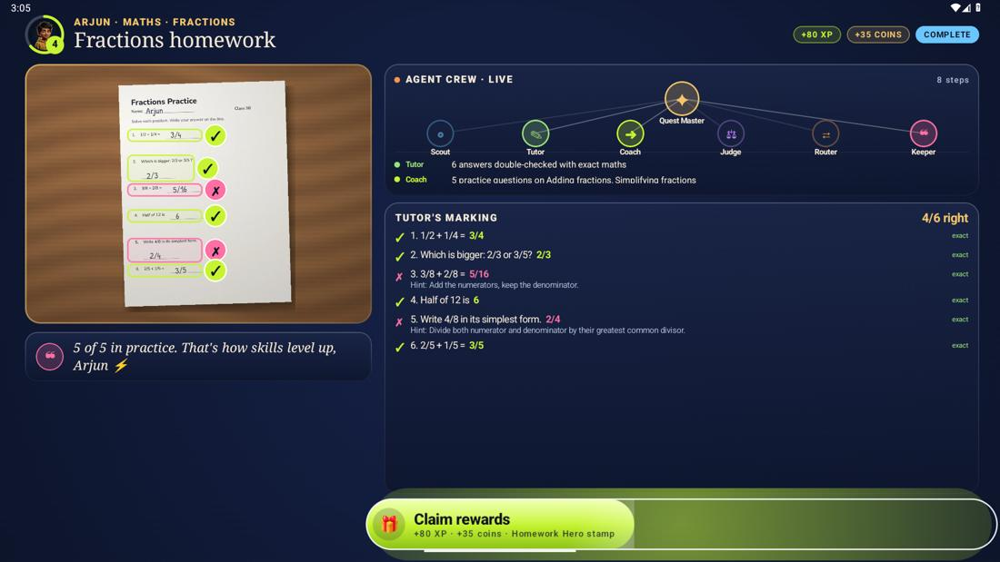
Snap a worksheet; the Tutor agent marks each answer on the photo. Every sum is checked exactly in code. Wrong answers get a hint like "you added the bottom numbers too", never the answer.
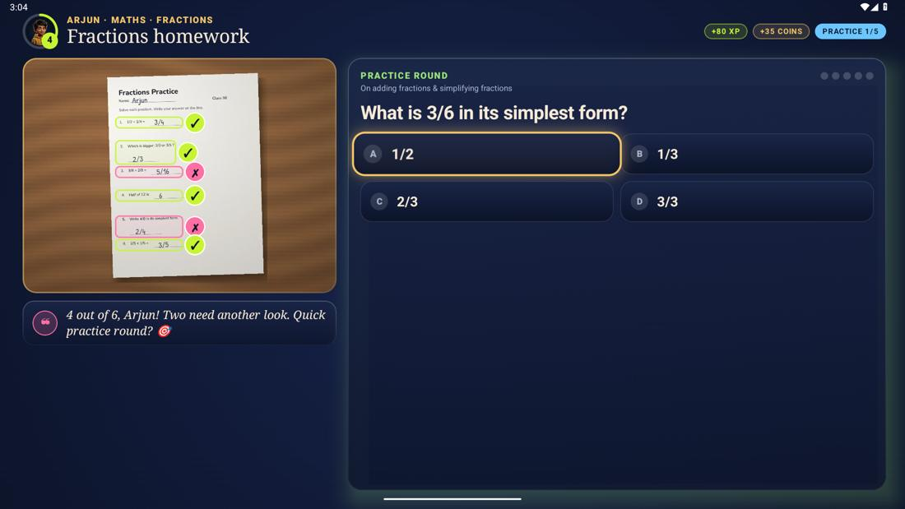
Five fresh questions on exactly the skills that slipped, validated so there's one right option and never a repeat of the homework. Answer with the remote or the phone; each answer explains the method.
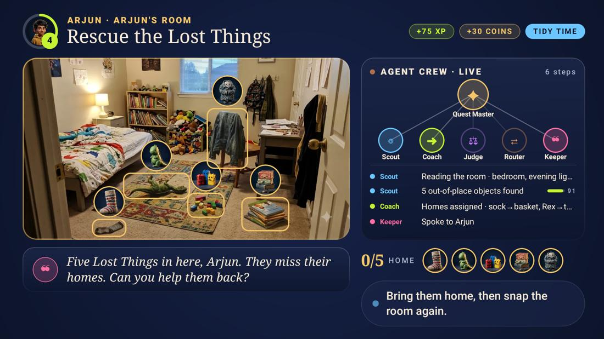
The kid snaps the room with a phone (QR from the TV). Scout finds what's out of place and each item becomes a stop-motion character pinned to the real object, with where it belongs.
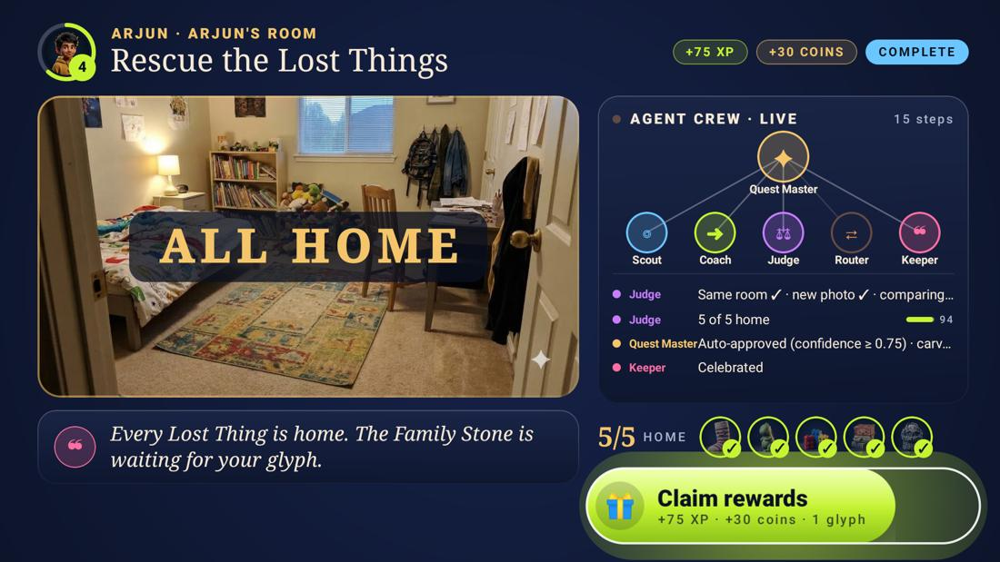
A live graph of the agent crew: Quest Master routes work to Scout, Coach, Judge, Router and Keeper, with each step and confidence score shown as it happens.
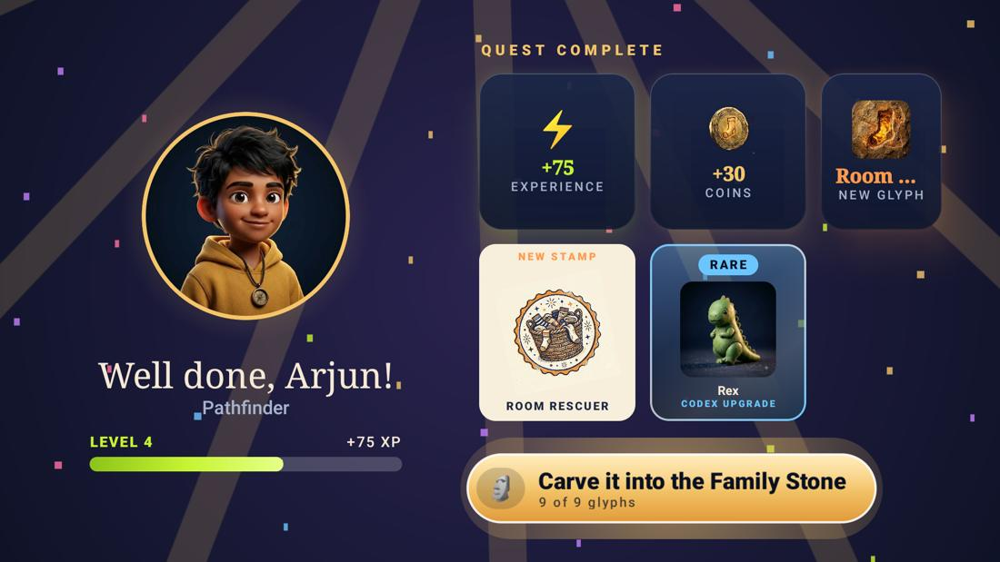
XP counts up, levels, coins, a new glyph, a passport stamp and Codex upgrades, revealed one beat at a time. Rewards are earned, never random.
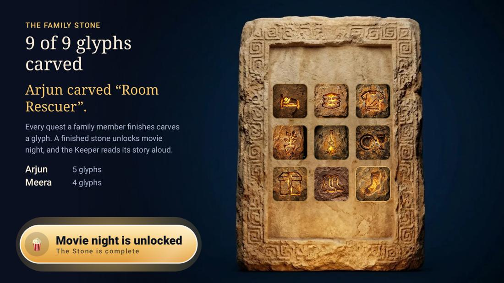
Each finished quest carves a glyph. When the stone is complete, Movie Night unlocks for everyone. The Keeper reads it aloud.
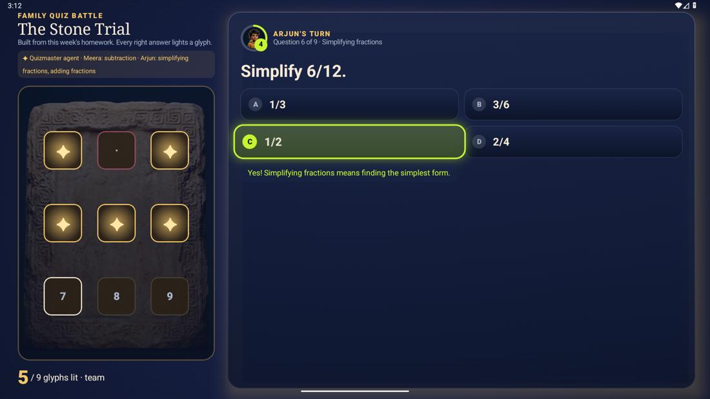
The Quizmaster agent builds a family quiz from this week's homework, pitched at each child. Turns alternate; every right answer lights a glyph. The team total, never a ranking.
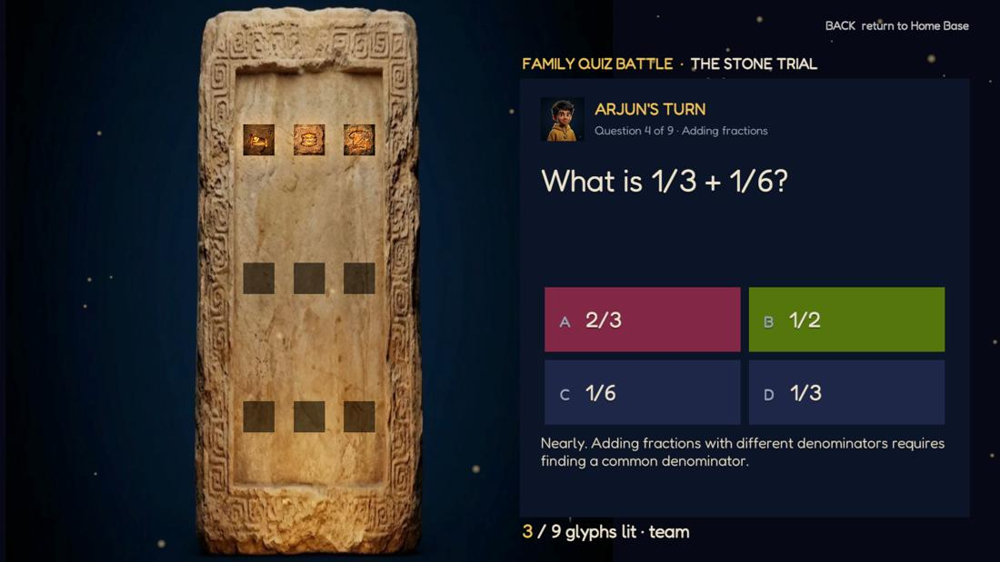
The Quiz Battle in a real game engine: right answers ignite the family's carved glyphs with bloom and sparks. Opened from the TV with the quiz; answers sync back.
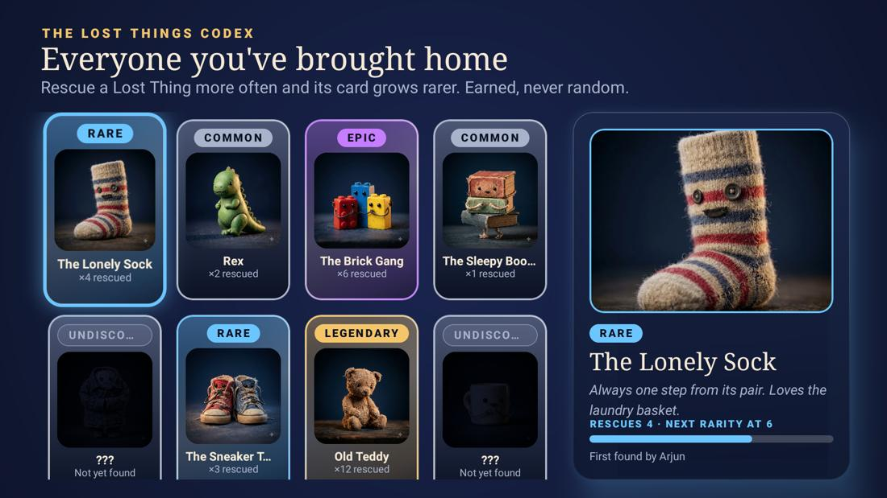
Collect every Lost Thing you rescue (rarity is earned by rescues), stamp a quest passport, and spend coins on outfits and decor that appear on the house.
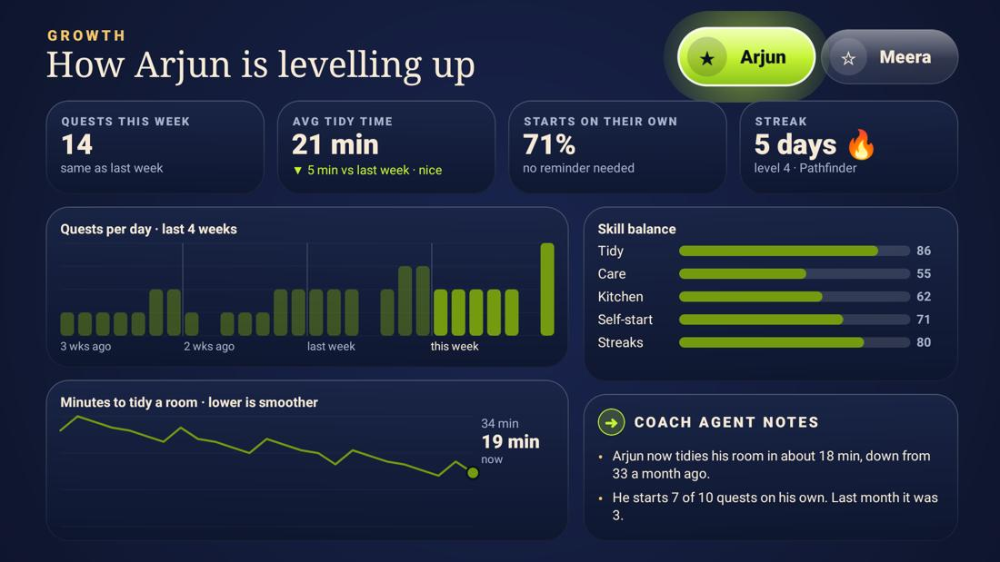
Quests per day, tidy-time trend, self-starts and skill balance, with the Coach agent's plain-language notes on how habits are building.
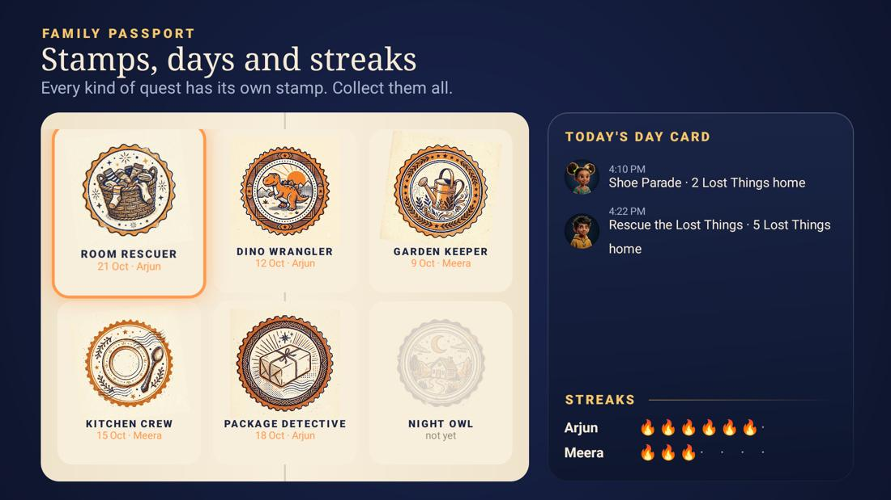
Siblings send hype emotes that burst onto the TV. Mom and Dad get alerts by push, email or SMS: quest done, "please check", streak at risk, and a weekly digest. A parent PIN guards approvals.
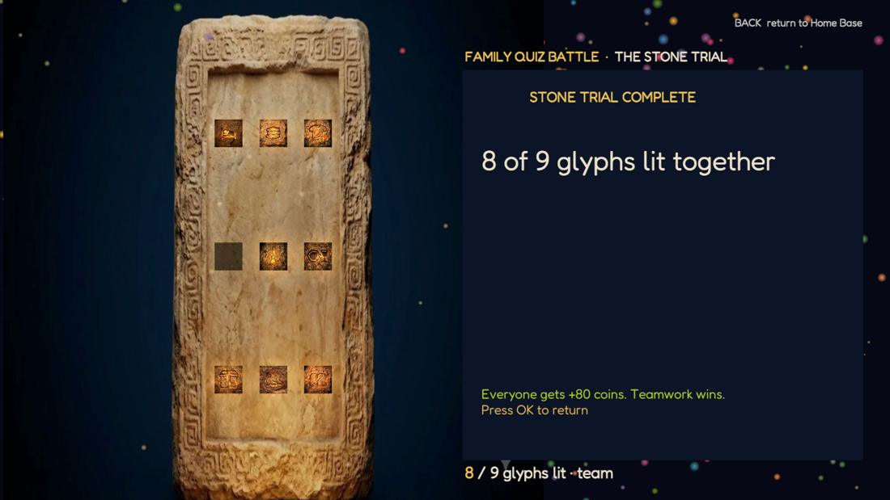
| Part | Built with | Where in the repo |
|---|---|---|
| Fire TV app | Kotlin, Jetpack Compose for TV, D-pad first, Fire OS (Android 7.1+) | tv-app/ |
| Rosetta Arena | Unity 6 LTS, Universal Render Pipeline, C#; ARM64 + x86_64 APK; hosts the Stone Trial | arena-unity/ |
| Exact maths checks | Python Fraction: overrides arithmetic verdicts, recognises classic slips, validates generated questions | agents/rosetta_agents/mathcheck.py |
| Agent crew | Python, Strands Agents, Amazon Bedrock Converse with forced JSON tools | agents/ |
| Cloud | AWS CDK: S3, DynamoDB, Lambda ×2, HTTP API, CloudFront | infra/ |
| Phone pages | Plain HTML and JavaScript | web/ |
| Open source library | VisionOverlay: draws AI boxes on images in Compose (MIT) | tv-app/vision-overlay/ |
| Art and sound | Google Flow art (credited, watermark kept); sounds synthesized from code | assets/ |
The TV app ships with a demo family (the Raos) and runs its household engine on the device, so everything works offline. Commands below are for Git Bash on this PC, from the project folder D:\Projects\AWS Hackathon - Amazon Build Ship Shape\Project Rosetta.
"$LOCALAPPDATA/Android/Sdk/emulator/emulator.exe" -avd ArenaTest_API36 -gpu swiftshader_indirect -memory 2048
adb easy to call for this session:
export PATH="$LOCALAPPDATA/Android/Sdk/platform-tools:$PATH"
cd tv-app && ./gradlew installDebug && cd ..
adb install -r "E:/Unity/Projects/RosettaArena/Builds/RosettaArena.apk"
adb shell am start -n app.rosetta.tv/.MainActivity
Prefer clicking? Open the tv-app folder in Android Studio, pick the running emulator in the device list and press Run. It does steps 3 and 5 for you.
KEYCODE_MENU: the worksheet photo arrives, the Tutor marks it 4 of 6 (replaying the real Nova Pro output for that photo) and the practice round opens.A local mock of the API, so you can see the kid and parent pages without AWS.
python web/dev_server.py
Then open http://localhost:8765/kid.html?code=R4KX and http://localhost:8765/parent.html?code=R4KX.
adb connect <fire-tv-ip>:5555 cd tv-app && ./gradlew installDebug && cd .. adb install -r "E:/Unity/Projects/RosettaArena/Builds/RosettaArena.apk"
The stack is live in your AWS account. API: https://jlgtsqwtzl.execute-api.us-east-1.amazonaws.com · phone page: https://dr8w3l96syzm7.cloudfront.net/kid.html?code=R4KX. To point the TV app at it, build with the API URL (last line below). To redeploy after changes, run the first three lines.
python assets/build_assets.py python agents/build_lambda.py cd infra && npm install && npx cdk deploy && cd .. curl -X POST <ApiUrl>/household/R4KX/reset cd tv-app && ./gradlew installDebug -ProsettaApiUrl=<ApiUrl> -ProsettaWebUrl=<WebUrl>
Needs Unity 6 on E: and your signed-in Personal license. Close the emulator and Unity Hub first: low memory makes Unity's shader compiler crash.
bash arena-unity/sync.sh --build
The APK lands in E:/Unity/Projects/RosettaArena/Builds/RosettaArena.apk.
python -m unittest discover -s agents/tests
Twenty offline tests: the API, uploads, agent policy, parent alerts, the learning flow, exact maths and question validation, with AI calls stubbed.
Mistakes become hints and a short practice round instead of a red cross and a guess. Progress is visible, shared and never shamed.
Less checking: homework is marked reliably and practice is set automatically. A parent only answers the unsure cases, and gets a clear note of what was learned.
Raids and the Family Stone are co-op. Nobody is ranked; the whole family wins Movie Night together.
The TV stops being the prize that gets switched off and becomes the family's shared game board, with phones and tablets as controllers.
How impact would be measured. No families have used it yet, so there are no results to claim. The Growth screen already records what a pilot would track: quests per day, minutes to tidy, how often a kid starts without being asked, and how many verdicts needed a parent.
| Hackathon track | How Rosetta fits |
|---|---|
| Fire TV | Native Fire OS app, 10-foot UI, D-pad first, TTS voice, plus a Unity companion game. |
| AWS Builder | Bedrock (Nova Pro vision), Strands Agents, Lambda, S3, DynamoDB, API Gateway, CloudFront, CDK; SES and SNS for alerts. |
| Open Source | VisionOverlay, an MIT Compose library for drawing AI detections on images. |